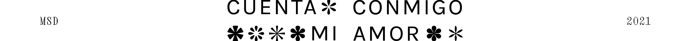

💐 𝒄𝒖𝒆𝒏𝒕𝒂 𝒄𝒐𝒏𝒎𝒊𝒈𝒐, 𝒎𝒊 𝒂𝒎𝒐𝒓 💐, es una propuesta expositiva online curada por MSD (Sebastián Mira + Daniela Gutiérrez-González) que indaga sobre formas de aproximación, modificación y ocupación en torno a lo natural, el paisaje y sus representaciones. Es también un proyecto curatorial e investigativo que profundiza en un interés por el tacto, lo háptico, la corporalidad, las prácticas especulativas y las metodologías afectivas que ejercemos desde nuestra posición de curadores y artistas.
Reúne ocho proyectos de diferentes lugares y momentos que ofrecen caminos de reflexión sobre el paisaje y su imagen (digital). En concreto, esta apuesta curatorial agrupa propuestas que, de una u otra forma, replican y potencian la experiencia natural de un paisaje, a través del simulacro y el artificio. La exposición se compone de entornos 3D navegables (construidos y ejecutados por Tersermundo) que incluyen una serie de piezas en vídeo e instalaciones para web.
La construcción de este proyecto www. y su postulación curatorial está atravesada por dos tangentes, dos temáticas, dos ejes con sus respectivas constelaciones: lo sensible y el paisaje.
Se planteó primero desde el ejercicio de curar como momento de intercambio, y ofrecimiento; como un proyecto semilla que pretende explorar, y comprender una práctica afectiva y distintas metodologías de arte digital estratificadas, porosas y encarnadas. Desde el acto de ofrecer (contener, conspirar) MSD coquetea con la idea de simulacro virtual de cercanía, de lo corpóreo, del cuidado, y lo háptico, y es que construye un vehículo de investigación con una aproximación curatorial sensible, corporal e involucrada.
Y desde esta postulación, es que se presenta también como un espacio de aproximación y expansión de lo que entendemos tradicionalmente por paisaje. La invención y exploración del ciberespacio como territorio ha llevado a una nueva definición en la que un paisaje se constituye por una sucesión de componentes conformados por secciones, formadas a su vez por cuadrantes de píxel. Lo que antes era un territorio que se extendía hasta el alcance de la mirada, hoy es todo aquello que nos ilumina.
En este sentido, 💐 𝒄𝒖𝒆𝒏𝒕𝒂 𝒄𝒐𝒏𝒎𝒊𝒈𝒐, 𝒎𝒊 𝒂𝒎𝒐𝒓 💐, plantea una resignificación urgente y poética del paisaje y lo natural en la contemporaneidad y de las maneras de tomar parte en él a través de pantallas y sentimientos interconectados. Al traer una serie de proyectos (muchos, originalmente pensados para una experiencia off-line) al lente de lo post-digital y traducirlos desde una nueva lectura que parte de su representación en pixeles (de la materialidad de la pantalla), planteamos una revisión de la relación latente entre territorio, paisaje, propiedad y tecnología.
(‘): Apostrophe *( MSD + LuisSebastián Sanabria y Jimena Madero) es una plataforma web potencialmente siempre mutable, un grupo de lectura, un acto de presencia, una negociación de distancias y proximidades, y un ejercicio de conspiraciones. Las obras de Andrés Barón y Renée Rhodes abordan formas de afectación mutua entre el ser humano y su entorno, a través de sencillos dispositivos tecnológicos; las obra de Kyle Seis y Karina Zen, presentan materialidades híbridas entre el mundo natural y su gemelo digital; las obras de Antonio Bermúdez y Jaakko Pietiläinen abordan geografías simbólicas mostradas a través de metanarrativas y cuentos; finalmente, Adina Glickstein, trabaja en torno a los lenguajes amorosos digitales y la dimensión emocional de los programas informáticos, la teoría y la codificación.
*Proyecto ganador de la beca sala virtual Red Galería Santa Fe ° IDARTES.
💐 𝒄𝒖𝒆𝒏𝒕𝒂 𝒄𝒐𝒏𝒎𝒊𝒈𝒐, 𝒎𝒊 𝒂𝒎𝒐𝒓 💐, is an online exhibition proposal curated by MSD (Sebastián Mira + Daniela Gutiérrez-Gonzalez) that explores ways of approaching, modifying and occupying the natural, the landscape and its representations. It is also a curatorial and investigative project that delves into an interest in touch, the haptic, corporeality, speculative practices, and affective methodologies that we exercise from our position as curators and artists.
It brings together eight projects from different locations and moments that offer paths of reflection on landscape and its (digital) image. Specifically, this curatorial proposal brings together proposals that, in one way or another, replicate and enhance the natural experience of a landscape through simulacra and artifice. The exhibition is composed of navigable 3D environments (built and executed by Tersermundo) that include a series of video pieces and installations for the web.
The construction of this www. project and its curatorial postulation is crossed by two tangents, themes, and axes with their respective constellations: the sensitive and the landscape.
It is first the exercise of curate as a moment of exchange and offering. It is a seed project that aims to explore and understand an affective practice and different methodologies of digital art that are stratified, porous, and embodied. From the act of offering (containing, conspiring), MSD flirts with the idea of a virtual simulacrum of closeness, the corporeal, care, and hapticality, and is that it constructs a vehicle for research with a sensitive, bodily, and involved curatorial approach.
And from this postulation (it is after), we present a space of approximation and expansion of what we traditionally understand as landscape. The invention and exploration of cyberspace as a territory have led to new definitions. A landscape is constituted by a succession of sections, formed in turn by pixel quadrants. What used to be a territory that extended as far as the eye could see, today is everything that illuminates us.
In this sense, 💐 𝒄𝒖𝒆𝒏𝒕𝒂 𝒄𝒐𝒏𝒎𝒊𝒈𝒐, 𝒎𝒊 𝒂𝒎𝒐𝒓 💐, proposes an urgent and poetic re-signification of the landscape and the natural in contemporaneity and of the ways of taking part in it through interconnected screens and feelings. By bringing a series of projects (many initially intended for an off-line experience) into the lens of the post-digital and translating them from a new reading that starts from their representation in pixels (from the materiality of the screen), we propose a revision of the latent relationship between territory, landscape, property, and technology.
(' ): Apostrophe *(MSD+LuisSebastian Sanabria and Jimena Madero) is a potentially always mutable web platform, a reading group, an act of presence, a negotiation of distances and proximities, and an exercise in conspiracies. The works by Andrés Baron and Renée Rhodes address forms of mutual affect between humans and their environment through simple technological devices; the works by Kyle Seis and Karina Zen present hybrid materialities between the natural world and its digital twin; the works of Antonio Bermúdez and Jaakko Pietiläinen address symbolic geographies shown through metanarratives and stories; and finally, Adina Glickstein, works around digital love languages and the emotional dimension of software, theory, and coding.
*Winning project of the grant sala virtual Red Galeria Santa Fé * IDARTES